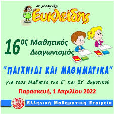

Ξαναγράθαμε διαγωνισμό, αυτήν τη φορά για την γλώσσα, γράψαμε "Κλείταρχο και Βερενίκη" και ναι μόνο αυτό έγεινε σήμερα.
Σήμερα είναι η ημέρα γνωστή ως η ημέρα της βαρεμάρας ήρθε. Ακόμη κι εγώ, ο εαυτός μου, βαριέμαι τη ζωή μου. Γράφω αυτήν την ενημέρωση ως ένα πράγμα για να περάσει η ώρα (και γιατί μου αρέσει να προγραματίζω)
Σήμερα έγεινε ο διαγωνισμός μαθηματικών "Μικρός Ευκλείδης", είχε 10 ασκήσεις ή "Θέματα". Δεν έχουμε πληροφορίες στο πόσοι έγραψαν ΝΑΙ ή ΟΧΙ στο φυλλάδιο αλλά ακόμη πιστεύουμε στις προβλέψεις των 7 μαθητών γράφοντας ΟΧΙ που κάναμε χτες.
Η τάξη μας σήμερα έπαιξε ποδόσφαιρο εναντίον το ΣΤ'2. Στην αρχή πηγαίναμε τα χάσουμε από αυτούς 2-0 μα έγεινε μετά κάτε επικό, το ΣΤ'1 έκανε τεράστια ανατροπή και νικήσαμε 4-2!
Η επίσημη ιστοσελίδα του Στ'1, γνωστή ως ΣΤ'1 Forever, φτιαγμένη από τον Γιώργο Αρούκατο, βγήκε δημόσια για όλη την τάξη του ΣΤ'1 ως η επίσημη σελίδα της τάξης.

Οι μαθητές αγωνιούν για τους βαθμούς τους λόγω κακής εξήγησης, προετοιμασίας και οδηγιών. Προβλέπεται τουλάχιστον 7 μαθητές θα γράψουν ΟΧΙ πάνω από το όνομά τους.